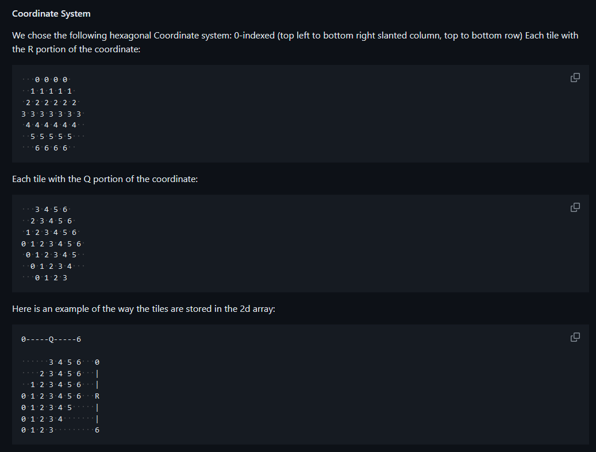
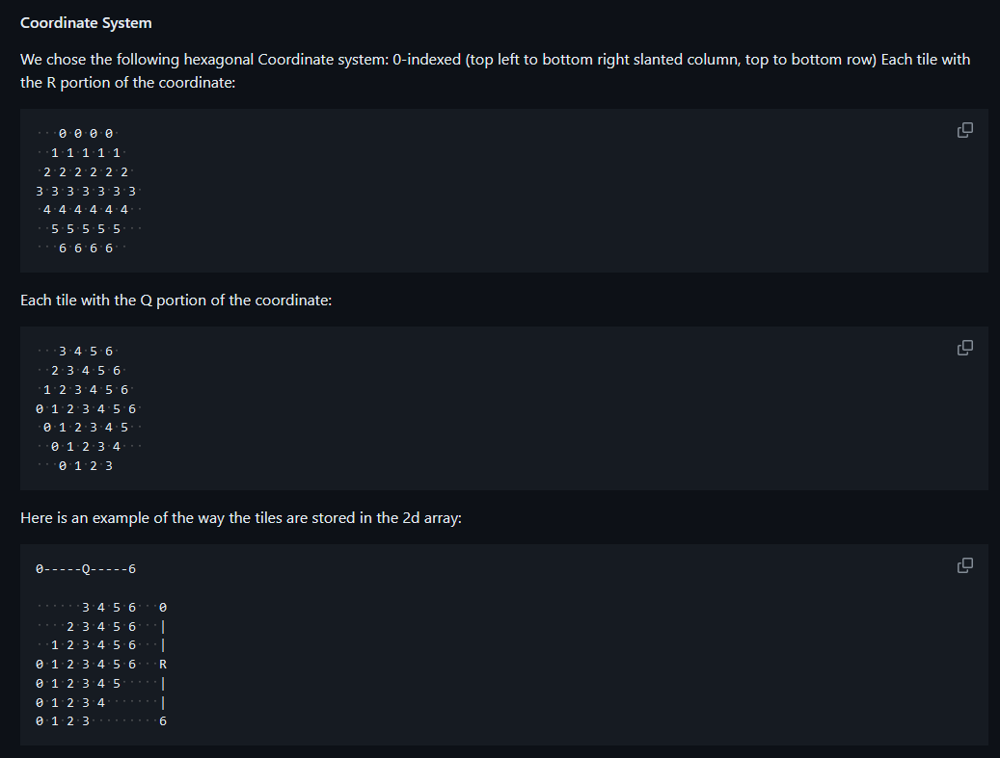

Significant Projects
Home
Simple Web Crawler
CS3700, Networks & Distributed Systems
Project Instructions
Python project starter code was provided, but I wrote everything from scratch, alone, in java. The bot handles a
login page, storing session tokens and cookies, before making HTTP requests to 'crawl' the site.
Performance was very important for this project, as the entire ~12,000 page site needed to be traversed in under
30 minutes, requiring at least 7 page requests to be made and handled every second on average.
Unfortunately, due to the challenging nature of the project and the tendency for students to procrastinate, server
performance played a large role. After becoming convinced that my single-threaded implementation was too slow
because of the server's performance, I wrote a relatively simple addon for my program that measured the round trip
time of an HTTP request. I published my findings to the class bulletin board and the deadline was extended.

 In the meantime, I improved my implementation to feature 'socket juggling', sequentially making up to 6 (for the
server's sake) HTTP requests from a queue before responses had been received.
In the meantime, I improved my implementation to feature 'socket juggling', sequentially making up to 6 (for the
server's sake) HTTP requests from a queue before responses had been received.
Reliable Transport Protocol
CS3700, Networks & Distributed Systems
Project Instructions
Python project starter code was provided, but I wrote everything from scratch in java, with some help from my
partner, Grace Calianese.
Performance was displayed publicly on a leaderboard on the submission site. We ranked first of 83 teams for data
sent, and third for transmission speed, behind another team and the professor himself.
Our program utilized gzip compression to compress the data before dividing it into 1486B packets. Only 14 Bytes
were needed to form the header, which contained a checksum, sequencing information, and data information. This
extremely low overhead of just 0.9% put us ahead of second place, which represented the packets with a JSON
format, which is only capable of reaching 2.9% overhead.

This level of performance fine tuning was possible thanks to a robust, toggleable logging utility that I built
into our project, along with excess thought about minimum header sizes, required information for reliable data
transmission, and the discovery of a bug in Java's Adler32 checksum library which mistakenly allocates a Long for
the checksum instead of an int. Adler32, as the name suggests, only needs 32 bits.
Reversi
CS3500, Object Oriented Design
This multi-stage project was my first introduction to a functional GUI. Written in java, utilizing swing and
javafx, this implementation of the game "reversi" includes options for player vs. player, player vs. AI, and AI vs
AI with toggleable difficulty modes.
This implementation also comes with a different board geometry than usual, offering a square and hexagonal tiling.
Same rules, very different game.
Below is some of the math for the coordinate system, pictures of the GUI, and the structure of the program's
Model-View-Controller design.


 
This project also featured a provider/customer cooperative section. This simulated real-world collaboration and
library usage.

This project also featured a provider/customer cooperative section. This simulated real-world collaboration and
library usage.
Each team sent their AI-player and GUI implementations to another team, who would then be required to 'hotswap'
the GUI and AI-players for one of the windows.
Adapters were used to allow the provided view and AI to interface with our underlying model.
Source Code
Due to the privacy concerns of the instructors for these courses, the source code is not publicly available. This is
to prevent Github's Copilot and other students from snooping around in completed project files.
Source code is conditionally available upon request, and is not to be distributed, duplicated, or otherwise shared
unless directly authorized.
Other Projects
I have a vast colletion of other projects, assignments, scripts, and experiments, both academic and personal, that I
don't consider to be exceptionally interesting.
I don't have the time at the moment to list out every project I've ever done, so if you'd like to know what I
work on in my own time, feel free to talk to me about it!
Back to top